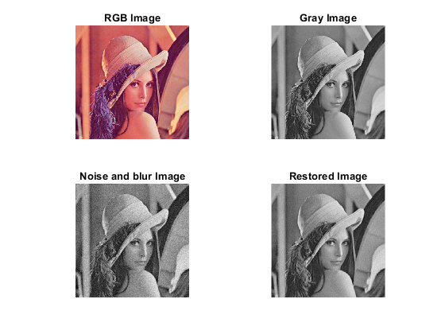

Contents
Clear
clear all close all clc
Input and display the binary image
I0 = imread('lenna.tif'); row = size(I0,1); column=size(I0,2); % I0=imresize(I0,[max(row,column) max(row,column)]); % row=max(row,column); % column=max(row,column); I=rgb2gray(I0); I=double(I);
Blur the image, corrupt the image using WGN and display it
h is the blurring kernel, and sigma is the noise standard deviation
h = ones(3,3)/9; sigma = 10; Xf = fft2(I); Hf = fft2(h,row,column); y = real(ifft2(Hf.*Xf))+sigma*randn(row,column); % circular convolution %y = filter2(h,x)+sigma*randn(N,N); % linear convolution
Restoration using generalized Wiener filtering
gamma = 1; alpha = 1; ewx = WienerFilter_fft(y,h,sigma); PSNR = abs([psnr(I,I) psnr(y,I) psnr(ewx,I)]) %peak to noise ratio MSE = [immse(I,I) immse(y,I) immse(ewx,I)] %Mean squared error subplot(221) imshow(I0) title('RGB Image') subplot(222) imshow(I,gray(256)) title('Gray Image') subplot(223) imshow(y,gray(256)) title('Noise and blur Image') subplot(224) imshow(ewx,gray(256)) title('Restored Image') return
PSNR =
Inf 23.8607 17.7575
MSE =
0 243.2581 59.6694
